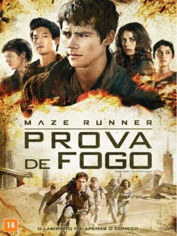

O futuro, definitivamente, será uma época muito difícil de se viver. Ao menos é o que pensam os autores dos mais populares best sellers adolescentes do momento. Afinal, as linhas traçadas por escritores como Suzanne Collins (Jogos Vorazes, 2012), Orson Scott Card (Ender’s Game, 2013), Veronica Roth (Divergente, 2014) e Lois Lowry (O Doador de Memórias, 2014) são invariavelmente sombrias e trágicas, pintando cenários apocalípticos, com liberdades cerceadas, o coletivo suplantando o individual e o destino do restante da humanidade sempre nas mãos de quem menos se espera – e quanto mais jovem e aparentemente despreparado, melhor. Essa fórmula é seguida à risca em Maze Runner: Correr ou Morrer, o mais novo exemplar do gênero que, se por um lado falha em suas tentativas de ser original, ao menos se destaca por algumas escolhas arriscadas que, num sentido inverso, acabam contando a seu favor.
mazer runner: prova de fogo
“O labirinto era apenas o começo”. Dessa vez a campanha de marketing não está exagerando: enquanto Maze Runner - Correr ou Morrer trazia um único cenário e um obstáculo preciso (superar o labirinto), agora Thomas, Teresa, Minho e os outros jovens devem combater um número infinito de perigos mortais. Quando escapam dos cientistas, devem sobreviver à travessia no deserto, quando passam por essa etapa, devem lidar com zumbis, depois com rebeldes, depois uma tempestade de raios que parece especificamente destinada a eles. Todas as pessoas, seres e máquinas ao redor querem matá-los; todo galpão que poderia abrigar o grupo esconde novas armadilhas. O mundo é mesmo cruel.

mazer runner:A cura mortal
“No final épico da saga Maze Runner, Thomas (Dylan O’Brien) lidera seu grupo de Clareanos em fuga, cuja missão final é a mais perigosa até então. Para salvar seus amigos, eles devem invadir a lendária Última Cidade, um labirinto controlado pela CRUEL que poderá ser o mais mortal de todos. Qualquer um que o complete vivo, receberá respostas às perguntas que os Clareanos têm feito desde que chegaram ao labirinto.”
É claro que se assistiu aos anteriores terá mais afinidade com a trama, mas caso contrário, ainda consegue entender a luta desses jovens, que são usados por uma organização. A Cruel busca a vacina contra um vírus que está dizimando a raça humana, porém usa métodos quase de tortura com os jovens que captura. E Thomas e seus amigos fazem de tudo para rever Minho (Ki Hong Lee), que está em poder da organização. Para chegar até a Última Cidade eles terão obstáculos perigosos para transpor, principalmente os infectados, conhecidos por Cranks.